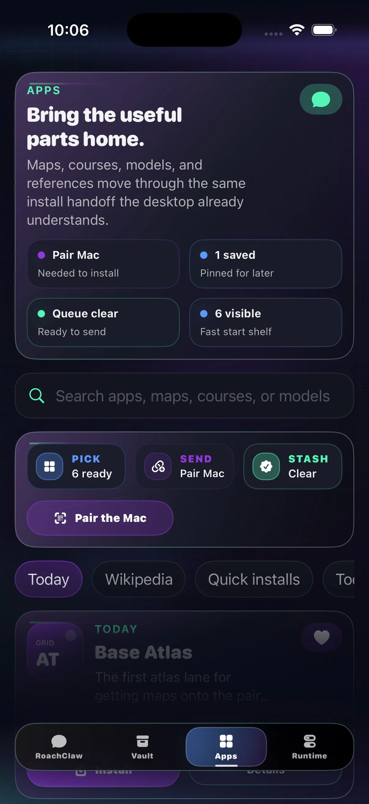
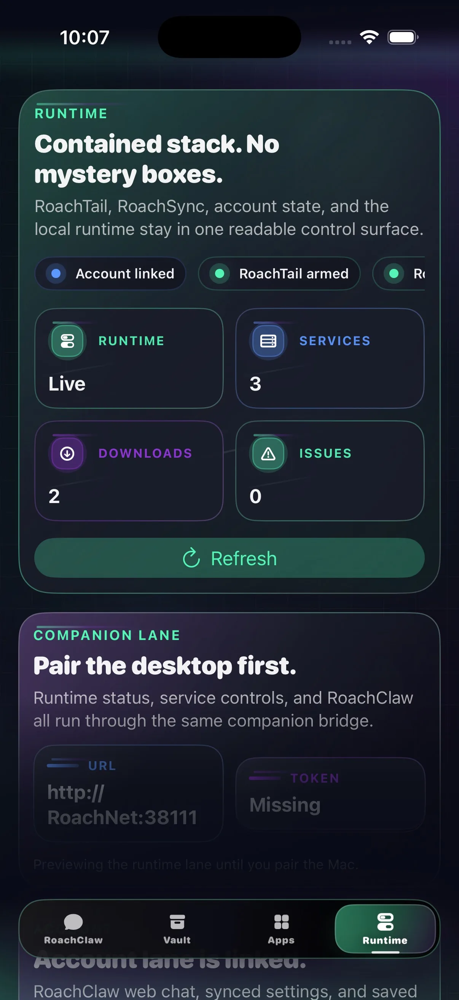
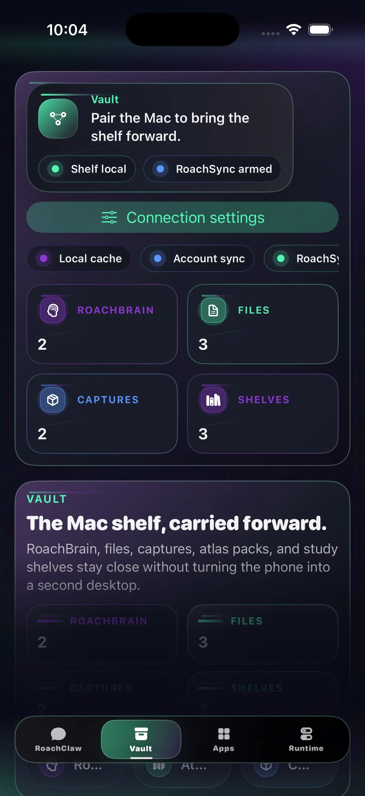

v0.1.5
v0.1.5
Chat
Keep the thread going.
Your Mac answers when it can. When it can't, the conversation carries on anyway — same RoachClaw, same account, no dead ends.
RoachNet iOS
RoachClaw first, then your files, your installs, a look at what the Mac is doing, and GPS for RoachAtlas. It knows it's a phone, and it's good at it.
An unsigned build for SideStore or AltStore. Connect your Mac whenever you feel like it — what you've already loaded still works when it's asleep.
Screens
Chat, your vault, app installs, a live look at the desktop, and GPS for RoachAtlas. Pocket-sized, not toy-sized.
v0.1.5
Your Mac answers when it can. When it can't, the conversation carries on anyway — same RoachClaw, same account, no dead ends.

v0.1.5Browse, line up installs, and let them land on the Mac the moment it's reachable again. Window shopping, except the things you pick actually show up.

v0.1.5See what's running, what's downloading, what needs a look, and whether RoachAtlas is actually feeding GPS to the Mac.

v0.1.5Maps, courses, saved pages, media, and documents — all readable on your phone, even after the connection to the Mac drops.
What’s in 0.1.5
Opens quicker, connects faster, and now feeds GPS to RoachAtlas. Small app, real job.
Chat comes first, the desktop stays readable at a glance, and everything sits close enough to the Mac version that you never have to relearn it.
Install
Add the shared source or grab the file directly. Same build either way.
Both routes land the same companion build. The source is cleaner. The IPA is there when you need the direct file.
Add the RoachNet source in SideStore, or download the IPA and share it to SideStore to install.
Open this page on your iPhone or iPad, or AirDrop the IPA first.
The shared AltSource points at the current unsigned IPA and keeps the source repo in one place, where future-you can find it.
Add the same RoachNet source in AltStore, or download the IPA and import it from Files.
Open this page on your iPhone or iPad, or AirDrop the IPA first.
Pairing
Your Mac keeps the models, the vault, and the installs. The phone stays fast because it isn't trying to be a second desktop.
Your Mac hosts the connection. The phone just needs a quick way in, and something sensible to fall back on when the Mac goes dark.
https://roachnet.roachtail is the front door.
https://roachnet.roachtail, or just scan the code on your Mac.